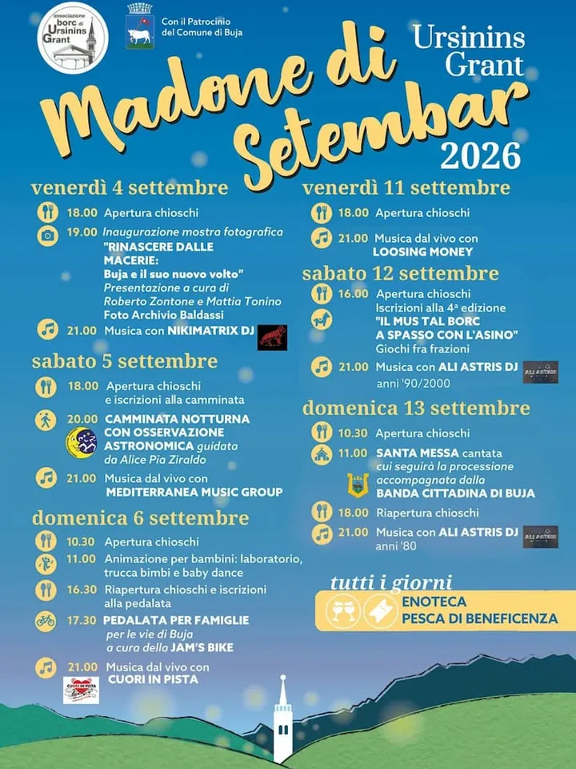

Friuli
da ven 4 set a dom 6 set · dalle 19:00
Madone di Setembar
Musica, mostra fotografica, camminata astronomica e una domenica dedicata alle famiglie.
 Indicazioni
Indicazioni
- Costi e prenotazioni
- Costo non indicato · Iscrizione prevista per la camminata
- Programma
- Conferma organizzatore da acquisire. Il programma è presente su una fonte divulgativa; al controllo del giovedì va cercata una conferma diretta dell’organizzatore.
- In caso di maltempo
- Nessuna indicazione specifica pubblicata.
- Note
- Programma da riconfermare sui canali dell’organizzatore.
L’EVENTO
Descrizione completa
La festa di Ursinins Grant apre un programma di dieci giorni tra chioschi, musica, tradizione, iniziative culturali e attività per famiglie. Nel primo fine settimana sono previste una mostra fotografica, una camminata astronomica, una pedalata e concerti.
Enoteca e pesca di beneficenza attive durante la festa.
IL PROGRAMMA
Programma e orari
Appuntamenti raccolti dalle fonti elencate. Dove manca un orario, non è ancora disponibile in questa scheda.
Venerdì 4 settembre
- 19:00 · Apertura chioschi
- Inaugurazione della mostra “Rinascere dalle macerie: Buja e il suo nuovo volto”
- Serata con Nikimatrix DJ
Sabato 5 settembre
- Apertura chioschi e iscrizioni
- Camminata notturna con osservazione astronomica
- Live dei Mediterranea Music Group
Domenica 6 settembre
- Laboratori, trucca bimbi e baby dance
- Pedalata per le vie di Buja con Jam’s Bike
- Musica dal vivo con Cuori in Pista
INFORMAZIONI UTILI
Prima di partire
- Enoteca e pesca di beneficenza attive durante la festa.
ORGANIZZAZIONE